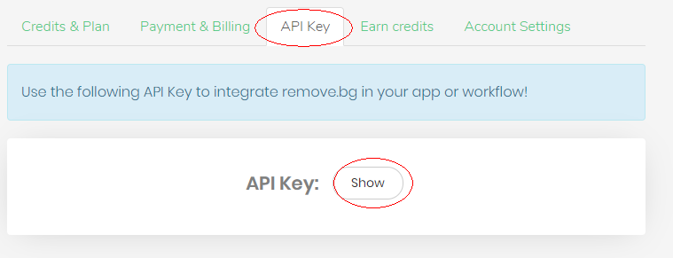

图片中物体（人物，动物或其它特定物品）的精确识别与提取是人工智能领域重要的一个方面，通过机器学习，最终能达到不需要人工干预准确的进行识别。
由于这些算法依赖于大量的训练或基础数据，所以，对于一些成果，以静态的算法，每个应用独立去完成漫漫的训练不是个好办法。因此，很多类似的成果会以一种 api 服务接口方式提供，当然服务可能需要付费，但一般有一定的免费量。
removeBG 就是这样一种服务，其详细的 api 接口详见 https://www.remove.bg/api，它使用简单，就一个 api 并且提供了多种语言的调用示例。api 免费使用量的限制为每月50次调用。
注册登录后，在 My Account 中可以查看到 apiKey，实现的方法中需要用到。

这里，需求定义为，传入图片 url，返回提取结果的 url。
则方法实现如下：
private string Cutout(string picUrl)
{
if (String.IsNullOrEmpty(picUrl)) throw new Exception("空空如也");
using (var client = new HttpClient())
using (var formData = new MultipartFormDataContent())
{
// 申请的 apikey 可考虑动态的调整
string key = "myremovebgapikey"; // apiKey
formData.Headers.Add("X-Api-Key", key);
formData.Add(new StringContent(picUrl), "image_url");
formData.Add(new StringContent("auto"), "size");
var response = client.PostAsync("https://api.remove.bg/v1.0/removebg", formData).Result;
if (response.IsSuccessStatusCode)
{
string imgName = DateTime.Now.ToString("yyyyMMddHHmmss");
FileStream fileStream = new FileStream(HttpContext.Current.Server.MapPath(String.Format("~/images/{0}.png", imgName)), FileMode.Create, FileAccess.Write, FileShare.None);
response.Content.CopyToAsync(fileStream).ContinueWith((copyTask) => { fileStream.Close(); });
string imgUrl = String.Format("http://mydomain/images/{0}.png", imgName);
return imgUrl;
}
else
{
throw new Exception(response.Content.ReadAsStringAsync().Result);
}
}
}
如下图，左边的图片，去除背景，抠出的人物效果如右图。图片会是背景透明的 png 文件，很方便自已添加背景。
关注公众号“时间维度”：
发送带有人物的图片即可。有使用量限制，哈哈！